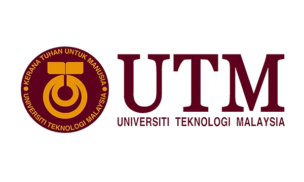

UTM
Universiti Teknologi Malaysia
جامعة التكنولوجيا الماليزية — الأولى محلياً في الهندسة والتكنولوجيا. جامعة حكومية بحثية تُعدّ المرجع الرئيسي للطلاب العرب الراغبين في الهندسة والحاسوب بماليزيا.
- تقديم 450 RM — إجمالي أول دفعة 18,608 RM
- 4 مواعيد قبول: فبراير، أبريل، يوليو، سبتمبر
- برنامج CBT الداخلي — بديل IELTS لدخول الهندسة
- ELS للغة الإنجليزية داخل الحرم